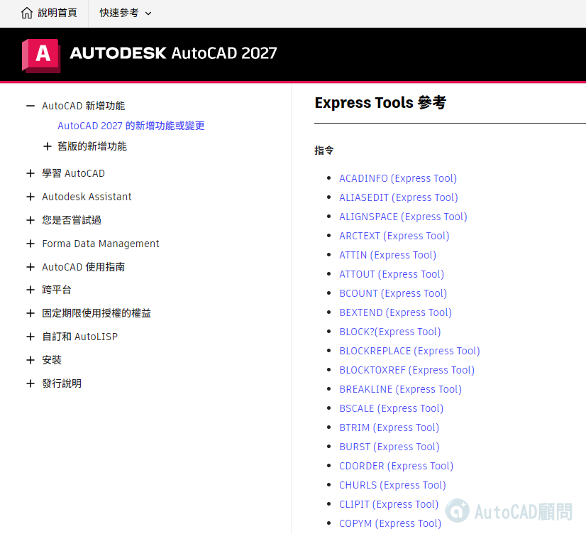

Express Tools 為 AutoCAD 軟體附贈的外掛程式，官方原廠僅提供英文版介面，AutoCAD顧問 提供繁體中文化界面服務。
AutoCAD 2027 說明 - Express Tools 參考 - Autodesk
https://help.autodesk.com/view/ACD/2027/CHT/?guid=GUID-CC626232-DC3A-45E1-B3C8-DF3F79186DE2

👇延伸閱讀👇
AutoCAD 2027 ~ 2013 Express補安裝步驟